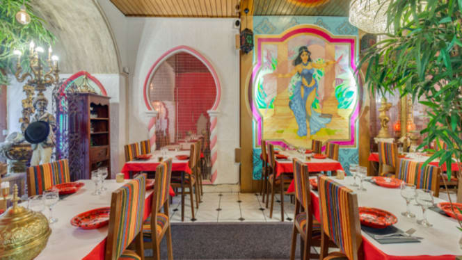
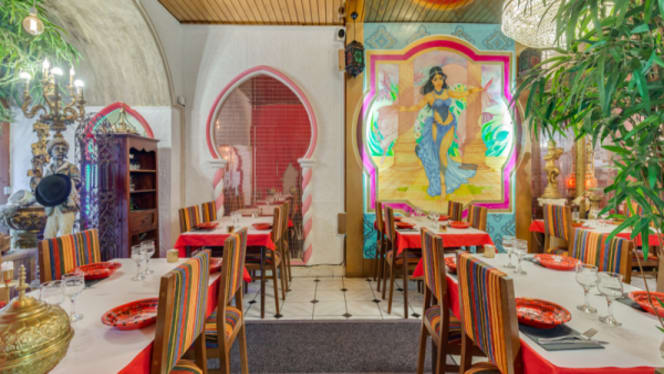

Les meilleurs restaurants à Nantes
1- art'n'blum nantes
10 rue Léon Blum, 44000 Nantes Numéro de téléphone : 02 40 89 41 56
2- Le couscousier
 

6 rue de la juiverie, 44000 Nantes Numéro de téléphone : 02 40 89 41 56
3- Le couscousier
6 rue de la juiverie, 44000 Nantes
Numéro de téléphone : 02 40 89 41 56